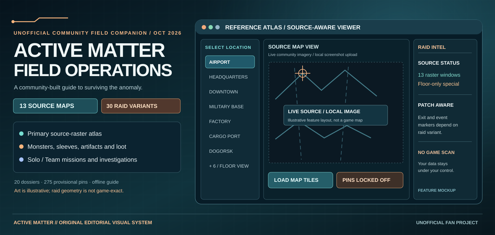

Source map atlas
13 game-derived source raster reference windows, zoom and pan, 30 raid-variant reference links including special areas, and no unaligned map pins.
The stronger source-raster atlas is now the main map experience: 13 overhead geographic reference windows with a special floor-only Gigastructure workspace. The complete free offline Solo/Team PvE and PvP companion is available separately, but its map backgrounds remain legacy illustrations.
Map integrity: Source imagery loads only after clicking the consent button. All legacy source-percent markers remain disabled in the primary atlas. The downloadable offline 2.1.1 guide still has separate illustrative maps and historic candidates—not certified current locations.
No subscription, no game memory scanning, no mod installation, no automatic collection of progress. Browser saves are local; export a backup before changing browsers or file locations. If viewing this repository on github.com: download and extract the complete repository ZIP and open index.html locally. GitHub Pages is not enabled yet.

Editorial interface mockup, not a live game screenshot. Open the Source Atlas for raster images loaded on demand; the offline guide remains 2.1.1.
13 game-derived source raster reference windows, zoom and pan, 30 raid-variant reference links including special areas, and no unaligned map pins.
Separated Solo/Team PvE records, optional Open Solo/Squad PvP planning, investigations, progress tracking and encounter dossiers.
11 original royalty-free procedural tracks, collectible cassette field journal, 12 themes and layout density options.
Download and extract the complete ZIP, then open active_matter_solo_pve_field_guide.html in a current browser. The guide includes its own art, music and functionality. Export a backup from the Backup tab before updating.
Accuracy note: Source tile windows are regional references, not certified raid boundaries. Extractions, timed exits, anomalies, moving events and spawn-group points are patch/variant sensitive and never overlaid as verified. No surveyed building heights or Gigastructure flat map are provided.
The old 14 map backgrounds remain inside the offline companion for continuity, but they are no longer the homepage’s primary map presentation. The atlas has 13 source-hosted overhead references and separately supports player-supplied Gigastructure floor images. 201 of 275 historical marker candidates match a source game-world X/Z dataset internally; that is not current-game marker verification. Use the screenshot calibration workbench to assess landmarks and held-out checks. No game-exact raid boundaries, marker overlay or elevation model has yet passed independent validation.
Map rebuild plan · Airport acceptance checklist · 14-map production register · Local map evidence tool.
Player instructions · Getting started · Release notes · Map data accuracy · QA report · Report corrections.